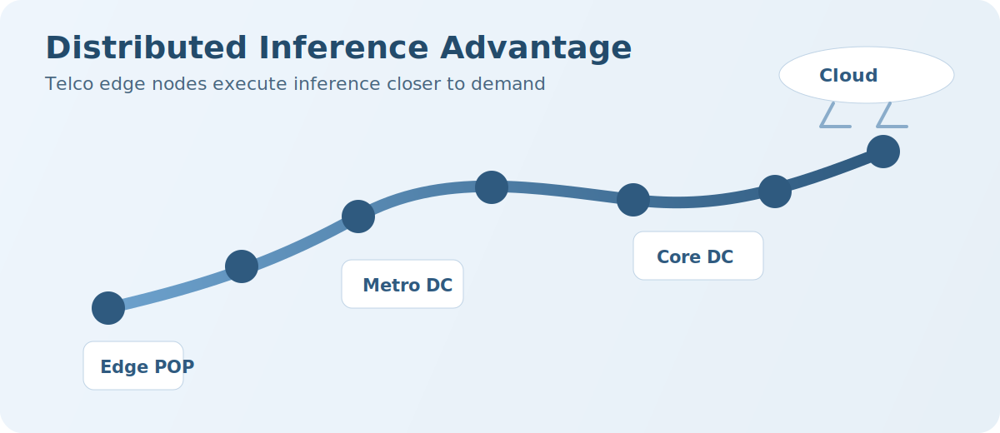
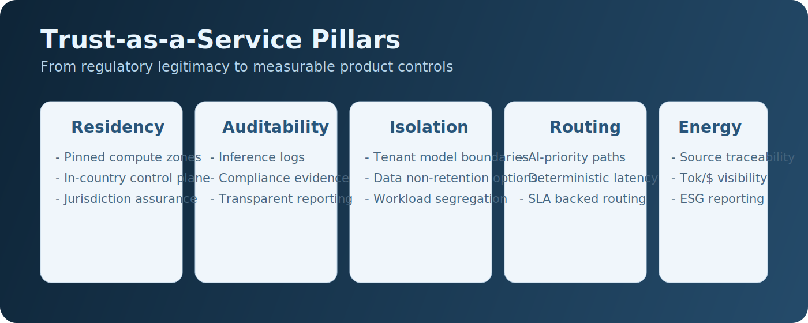
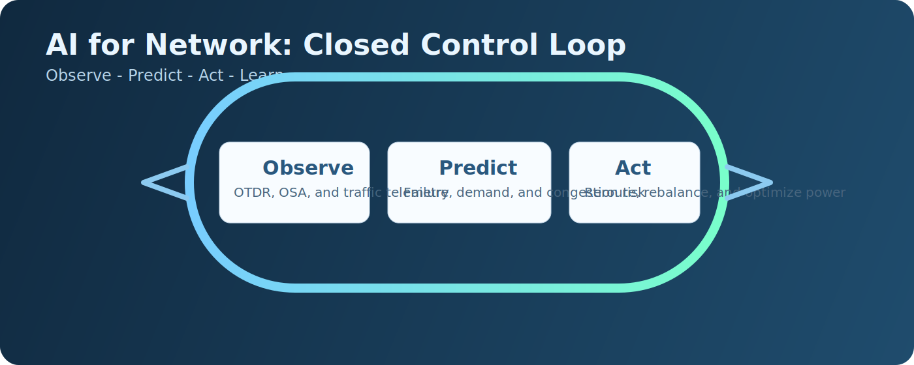
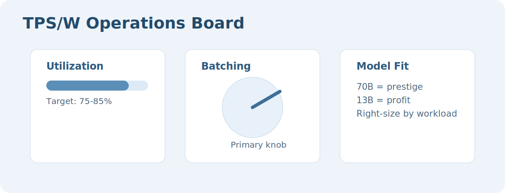

A complete guide to telco AI strategy: positioning, trust framework, monetization tracks, and the operational economics model for telecom operators.

Three Ways for Telcos
AI Landlord: provide power, rack, and connectivity.
Sovereign AI Operator: vertical solutions for regulated markets.
AI-Integrated Network: focus on efficiency and productivity.
Telcos Positioning
Unlike hyperscalers who optimize for massive model training, telcos are positioned to win at efficient inference by leveraging distributed edge infrastructure. Often, when price and latency are equal, hyperscalers still win thanks to richer ecosystems.
Advantages
Know local markets and have trusted enterprise relationships.
Own last-mile and deep network facilities and can deploy edge compute.
Can play on sovereignty and local-regulation compliance.
May offer more deterministic performance than layered best-effort hyperscaler stacks.
Can integrate AI into network control loops to maximize performance per watt per dollar in real time:
Improve performance.
Lower operational cost.
Increase energy efficiency.
Enable new revenue models.
Disadvantages
Cannot out-build hyperscalers.
Legacy technology stack and immature software ecosystem.
Skill shortage (single-digit teams vs 10x-100x scale at hyperscalers).
Significantly lower capital and scale.
🎯Telcos cannot win at hyperscale training, but can win at distributed inference scale.
What Is TRUST for Telcos
⚠️Trust is not automatic. Trust in reliability is not equal to trust in digital agility. Trust needs products.

1. Regulatory & Sovereignty Trust
Telcos are regulated infrastructure operators under national telecom licenses, lawful intercept obligations, data retention laws, security audits, and government oversight.
What this means: data location guarantees, compliance with national law, auditable infrastructure, and legal accountability inside jurisdiction.
2. Infrastructure Trust
Ownership of fiber, last-mile access, metro POPs, mobile RAN, core routing, and national backbones enables deterministic latency, physical redundancy, and SLAs backed by physical control.
3. Operational Trust (SLA & Reliability)
99.999% uptime expectations.
Emergency services requirements.
Disaster recovery mandates.
Carrier-grade processes.
4. Data Relationship Trust
Subscriber identities.
Billing data.
Location data.
Network behavior metadata.
5. National Strategic Role
Critical national infrastructure.
Part of national resilience planning.
Cybersecurity partners to government.
That gives: political legitimacy, long-term stability perception, and institutional embeddedness.
6. Model Governance Trust
Transparency about model usage.
No silent data harvesting.
Clear retention policies.
Auditability of inference logs.
7. Energy & ESG Trust
Clean hydropower.
Transparent energy sourcing.
Carbon accounting.
8. AI Deterministic Performance Trust
Hyperscalers and neoclouds often win in developer trust, AI innovation credibility, and ecosystem richness.
If trust is your asset, productize it: Trust-as-a-Service.
Data residency enforcement.
Audit-ready logging.
Physically pinned compute zones.
Transparent topology mapping.
In-country control plane.
AI-priority routing.
Regulatory-grade documentation.
Energy source transparency.
Data non-retention guarantees.
Model isolation per tenant.
Tok/$ dashboards.
GPU-hour billing clarity.
Operations / AI for Productivity
AI for Network transforms telecom operations from manually managed infrastructure to a self-optimizing, energy-aware, economically intelligent system. The primary value is internal margin expansion, resilience, and SLA uplift, while enabling premium deterministic service models.

Predictive Maintenance and Fault Prediction: ML (for example, Random Forest and LSTM) over OTDR/OSA history predicts fiber cuts and hardware degradation before failure.
Energy Efficiency Optimization: dynamic power allocation and sleep modes reduce energy consumption by roughly 15% without harming user experience.
Automated & Intelligent Customer Support: generative assistants use customer history and real-time network state (example: Vodafone).
Intelligent Capacity Planning.
GAI for Network Engineering & Assisted Troubleshooting (Cisco AI Canvas).
Proactive Service Monitoring & Customer Churn Reduction.
Reduction of Truck Rolls: remote root-cause diagnostics reduce physical site visits and costs.
Network Operations and Autonomous Optimization: move toward Level 4 autonomy with minimal human intervention.
RAN Visibility & Optimization: deeper traffic visibility, better congestion experience, and better power control.
AI Infra / Hardware Resources
Telcos are capitalizing on physical assets (data centers and edge locations) and regulatory expertise to enter the compute market.
GPUaaS.
Compute/GPU Marketplace.
Fine-tuning service.
Hosting pre-trained LLMs in customer tenants.
Dedicated AI transport (Golden Pipes: Verizon AI Connect, SK Telecom).
MOFN & managed IP backend networks.
Hosting GPUs (rack, space, cooling, and related facilities).
Connectivity Quality on Demand (QoD) and differentiated experience.
Monetize AI connectivity through Network-as-a-Service (NaaS).
GPUaaS is becoming a commodity. It is often cheaper to rent compute from AWS, Google Cloud, Lambda, and CoreWeave. This market can quickly become a race to the bottom.
AI Software Services / AI-Based Software Solutions
Sovereign AI infrastructure requirements and data privacy rules drive software opportunities. Most services target enterprises, with fewer globally recognized opportunities for residential subscribers.
AI Services for Enterprises
Host sovereign generic AI features (model catalogues) in customer tenants (for example, Swiss AI Platform):
Text summarization.
Translation.
RAG frameworks.
Agentic frameworks.
Call recordings processing.
Meeting minutes drafting.
Text-to-image (ideation and creative use).
Image-to-text (object recognition).
Speech-to-text.
Text-to-speech.
Data lakes and long-term storage (S3).
LLM incremental fine-tuning.
Cisco AI Defense for model validation.
LLM intelligent routing (including down detection and price/quota-driven routing).
ThousandEyes dashboard for popular AI services.
Integrated Sensing and Communication (ISAC).
Vertical-specific AI solutions (manufacturing, healthcare, smart cities, logistics, utilities, and others).
AI Services for Residential Market
ℹ️This is a nice-to-have portfolio and more of a retention tool than a growth engine.
Smart Home Management: AI in residential gateways optimizes Wi-Fi and QoE for high-bandwidth applications (for example, 4K streaming).
IoT and Home Security: AI-driven bundles monitor household traffic anomalies and protect vulnerable devices.
AI-based parental control: guardrails with tools such as Cisco AI Defense.
Hyper-personalization: usage-based plans, contextual troubleshooting, predictive care, and hardware upsell.
A smart thermostat attempting to contact an unknown external IP is one example: an RNN can detect the anomaly in time-series data and the system can isolate the device to prevent botnet recruitment.
Core value proposition: simple router-level security without per-device software installation.
Protect headless devices that cannot run antivirus software.
Proactively scan IoT endpoints for default passwords and outdated firmware.
Analyze content usage in real time to enforce categories and screen-time limits.
Analyze RF disruptions to detect motion and known/unknown devices.
Sell Experience
Marketplace for ecosystem partners.
Education, courses, and trainings.
Data monetization.
Other Possible Moves
Partner with neocloud providers: a primary strategy for entering AI without full factory CAPEX. Telcos can resell or host neocloud capacity, or lease facilities in an IaaS model.
AI Economy Enablers: avoid competing head-on with hyperscalers; build specialized infrastructure and connectivity needed to run AI.
DePINs: decentralized physical infrastructure with isolated remote sites and overlay links to major POPs (examples: SRv6 overlay with eBPF on Linux, isolated PE routers).
Contribute to decentralized GPU clouds to increase GPU utilization.
Tokens per Second per Watt
Tokens per second per watt (TPS/W) is a critical efficiency metric for AI, measuring how much generation performance can be achieved for a given power footprint (including hardware and cooling). As power becomes a hard constraint for AI expansion, TPS/W becomes a core data-center metric.
To optimize this, attack the denominator (energy) while maintaining acceptable latency in the numerator. This is where edge inference and inference-optimized chips matter.
⚠️Optimizing TPS/W without actual sell is marginal. TPS/W is mostly an operational metric: it lowers cost and increases margin.

Power Consumers
GPU.
CPU.
DRAM.
NVLink / PCIe.
Networking.
Storage.
Cooling overhead.
Where Telcos Lose Tok/s/W Today
Over-sized models for simple use cases.
Poor batching.
Underutilized GPUs.
No quantization.
Air-cooled legacy data centers.
Single-tenant deployments.
Right GPU choice significantly improves TPS/W.
List of KPIs to Measure
Tok/s/W
Tok/$
Tok/CO2
Revenue per GPU-hour
Utilization %
Attacking Energy in TPS/W Equation
Inference pods with inference-specialized chips.
Batching as a primary optimization knob.
Model size vs efficiency tradeoff (70B for prestige, 13B for profit); host multiple right-sized models.
Proper quantization to reduce memory movement and watts (FP16 to INT8 can quickly double TPS/W).
Speculative decoding with a small quantized draft model verified by a larger model in batch.
Energy-aware routing to the node with lowest token energy cost.
Split inference with tiered architecture.
Maximize GPU utilization (target 75-85%).
Context-length optimization to avoid long idle sessions.
Directly power AI nodes from DC plants to reduce conversion losses.